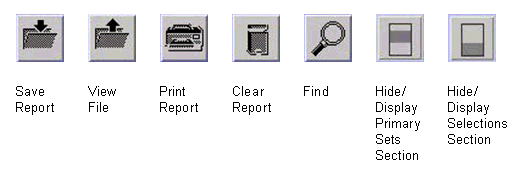

Buttons
The functions of the seven buttons in the upper left hand corner of the main pin margin screen are as in the figure below.

The functions of the seven buttons in the upper left hand corner of the main pin margin screen are as in the figure below.
